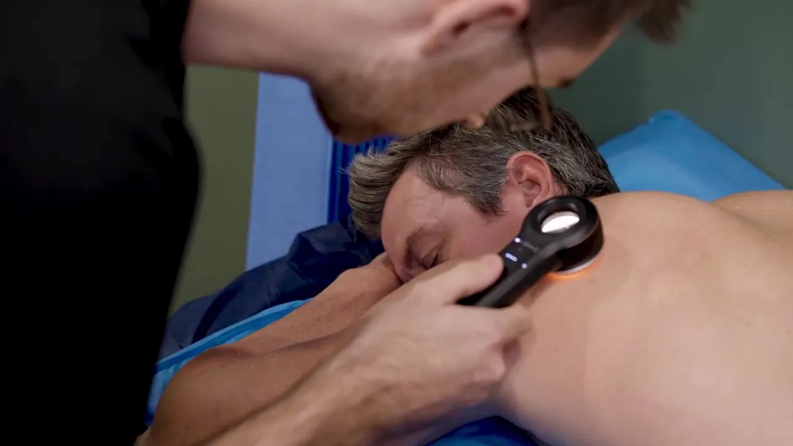
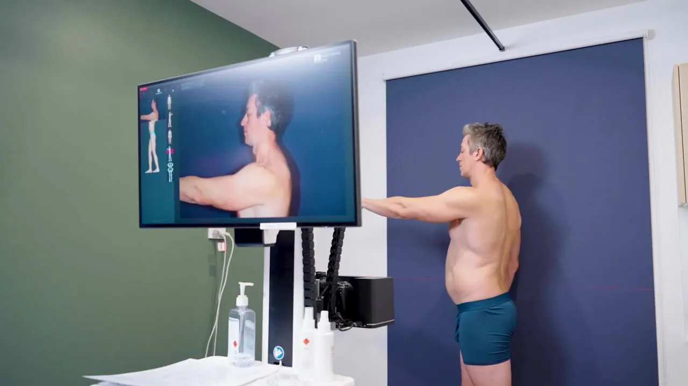
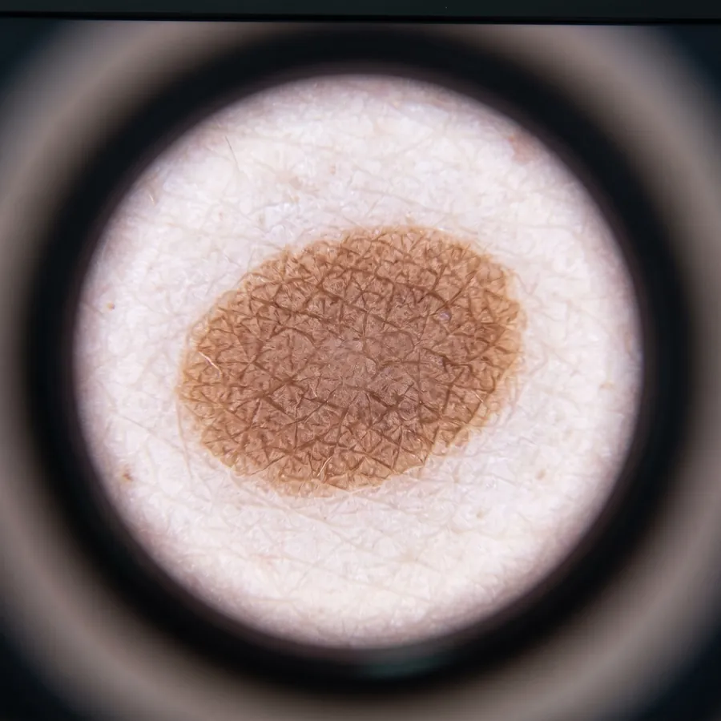

Payment & Medicare
Payment is required at the time of your appointment. Reception can process your Medicare claim through our Tyro facility so your rebate is instant. Tyro terminal fees apply.
We are a private billing family practice with longer standard appointments. This page sets out what our skin checks, Total Body Mapping and GP consultations cost, the indicative Medicare rebate, and what you can expect to pay out of pocket.
$109–$170
$63.95–$82.90 out of pocket after Medicare
$219–$280
$173.95–$192.90 out of pocket
Bulk billed
Standard GP consultations, 8am–5pm Monday–Friday
Queensland has some of the highest rates of skin cancer in the world, and our GPs perform thousands of skin checks every year. The fee depends on how many spots need checking and how long your appointment takes.
| Appointment | Fee | Medicare rebate* | Out-of-pocket |
|---|---|---|---|
| Skin Spot Check1 or 2 lesions | $80–$109 | $24.55–$45.05 | $55.45–$63.95 |
| Full Skin CheckHead-to-toe examination with a dermatoscope | $109–$170 | $45.05–$87.10 | $63.95–$82.90 |
| Full Skin Check + Total Body Mapping (TBM)Skin check plus total body photography | $219–$280 | $45.05–$87.10 | $173.95–$192.90 |
Private Health Fund Rebates may apply for Total Body Mapping depending on level of cover and health fund.
Due for a skin check? Book online and choose a skin check or Total Body Mapping appointment, or call (07) 3207 7744. Learn more about skin checks.



Total Body Mapping, also called mole mapping or total body photography, is booked alongside a Full Skin Check. The Total Body Mapping component is $110 including GST, on top of the skin check fee. The Medicare rebate applies to the skin check consultation only.
TBM may suit you if you have many moles or freckles, fair skin, a history of sunburn, or a personal or family history of melanoma. Learn more about Total Body Mapping.
Our standard appointments are 15 minutes, longer than many practices. Consultation fees are based on the length of your appointment, in line with Medicare time-based levels.
| Consultation | Fee | Out-of-pocket |
|---|---|---|
| Short (Level A)Under 6 minutes | $76.00 | $55.45 |
| Standard (Level B)Under 15 minutes | $104.00 | $58.95 |
| Extended (Level B)15–19 minutes | $114.00 | $68.95 |
| Standard (Level C)20–29 minutes | $162.00 | $74.90 |
| Extended (Level C)30–39 minutes | $193.00 | $105.90 |
| Standard (Level D)40–44 minutes | $272.00 | $143.65 |
| Extended (Level D)45 minutes or more | $298.00 | $169.65 |
| Prolonged (Level E)60 minutes or more | $389.00 | $181.10 |
| Consultation | Fee | Out-of-pocket |
|---|---|---|
| Telehealth Level AUnder 6 minutes | $105.00 | $84.45 |
| Telehealth Level BUnder 15 minutes | $105.00 | $59.95 |
| Telehealth Level C20–29 minutes | $163.00 | $117.95 |
| Telehealth Level C, MyMedicare registered20–29 minutes | $163.00 | $75.90 |
A Medicare rebate applies to telehealth consultations if you have been seen in person by a doctor at our practice in the past 12 months. Extras such as vaccines and procedures incur additional costs.
Sunstate Family Practice is a private billing practice, with bulk billing for the following:
Payment is required at the time of your appointment. Reception can process your Medicare claim through our Tyro facility so your rebate is instant. Tyro terminal fees apply.
A $70 fee applies to cancellations with less than 2 hours’ notice and to missed appointments.
Your out-of-pocket cost may be lower once you reach the Medicare Safety Net threshold. Register on the Services Australia website.
A full skin check costs $109 to $170 depending on length and complexity. The indicative Medicare rebate is $45.05 to $87.10, leaving an out-of-pocket cost of $63.95 to $82.90. A spot check of 1 or 2 lesions costs $80 to $109, with $55.45 to $63.95 out of pocket.
A Full Skin Check with Total Body Mapping costs $219 to $280. The indicative Medicare rebate of $45.05 to $87.10 applies to the skin check consultation, leaving $173.95 to $192.90 out of pocket. Private health fund rebates may apply for Total Body Mapping depending on your level of cover and health fund.
Sunstate Family Practice is a private billing practice. Children 12 years and under are bulk billed for standard GP consultations between 8am and 5pm Monday to Friday. DVA Gold and White card holders are bulk billed for eligible conditions, and care plans, health assessments, home medication reviews, heart health assessments and immunisations are bulk billed.
Yes. Payment is made at the time of your appointment and reception can process your Medicare claim through our Tyro facility, so your rebate is paid back straight away.
No. You do not need a referral to see a GP for a skin check. You can book online and choose a skin check appointment type, or call reception on (07) 3207 7744.
Yes. A $20 surcharge applies to appointments before 8am and after 5pm Monday to Friday, and to all Saturday appointments.
Your GP will discuss the next steps, which might include monitoring, a biopsy or removal of the lesion. Our doctors perform excisions in our on-site procedure room. Procedures attract additional costs, so please ask reception about the expected cost before proceeding.
Book online or call (07) 3207 7744.
Sunstate Family Practice & Skin Cancer Clinic, 127 Link Road, Victoria Point QLD 4165.